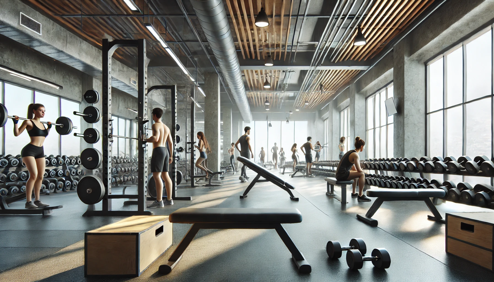

Ganho de Massa Muscular: Exercícios e Alimentação Saudável
Neste espaço, você encontrará tudo o que precisa saber para transformar o seu corpo e alcançar seus objetivos de forma eficaz e saudável. O ganho de massa muscular é uma jornada que envolve dedicação, conhecimento e disciplina. Sabemos que o caminho pode ser desafiador, mas estamos aqui para tornar cada etapa mais simples, segura e informada.
Aqui, você terá acesso a conteúdos detalhados sobre exercícios, técnicas de treinamento e como se alimentar bem para favorecer o treino e ganhar massa muscular. Seja você um iniciante ou alguém que já pratica há algum tempo, nossas orientações são baseadas em fundamentos científicos e práticas comprovadas, para que você possa atingir resultados reais e duradouros.
Explore nossas seções e descubra guias completos sobre os principais tipos de exercícios e estratégias alimentares para que você possa potencializar sua saúde e desempenho físico. Nossa missão é ajudar você a construir um estilo de vida que una força, resistência e qualidade de vida.
Por que desenvolver esses músculos? (Grupo 1)
1. Tórax
Trabalhar o tórax é essencial para criar força no peito e melhorar a estabilidade dos ombros. Exercícios comuns incluem supino, flexões e crucifixo, que ajudam a desenvolver a musculatura peitoral.
2. Ombro
O ombro é um grupo muscular complexo e versátil, e fortalecê-lo é importante para a mobilidade e resistência em diversos movimentos do tronco. Exercícios como elevação lateral, desenvolvimento com halteres e elevação frontal são ótimos para o desenvolvimento dos deltóides.
3. Tríceps
Como o principal músculo na parte de trás do braço, o tríceps é fundamental para a extensão dos cotovelos. Movimentos como extensões de tríceps, mergulhos e tríceps na polia são eficazes para isolar e fortalecer esse grupo muscular.
Treino para cada um:
1. Tórax
Supino Reto com Barra: Este é um dos melhores exercícios para trabalhar o peitoral maior. Ele permite o uso de cargas pesadas, promovendo hipertrofia.
Supino Inclinado com Halteres: Foca na parte superior do peito e ajuda a construir um peitoral mais definido e completo.
Crucifixo com Halteres: Excelente para isolar os músculos do peitoral e dar mais ênfase à forma e definição muscular.
Flexão de Braço com Peso Corporal: Embora seja um exercício básico, a flexão ativa bastante o peito, ombros e tríceps, especialmente com variações de inclinação.
2. Ombro
Desenvolvimento com Halteres (Shoulder Press): Um dos exercícios mais completos para os ombros, trabalhando principalmente o deltóide anterior.
Elevação Lateral: Trabalha o deltóide lateral, dando largura aos ombros e contribuindo para uma aparência de ombro mais ampla.
Elevação Frontal: Ajuda a desenvolver o deltóide anterior, dando uma aparência equilibrada e forte aos ombros.
Remada Alta com Barra: Além de trabalhar o trapézio, ativa os deltóides, sendo uma boa opção para engrossar os ombros.
3. Tríceps
Tríceps Pulley (Extensão de Tríceps na Polia): Excelente para isolamento do tríceps, ideal para um trabalho mais controlado.
Supino Fechado com Barra: Trabalha o tríceps e também envolve um pouco o peitoral, ótimo para ganhar força e massa.
Mergulho (Dips): Pode ser feito em barras paralelas ou entre bancos, focando na parte posterior do braço e contribuindo para um bom desenvolvimento de massa.
Extensão de Tríceps com Halteres (French Press): Ótimo para isolar o tríceps e forçar a extensão total do músculo, promovendo ganho de massa.
Por que desenvolver esses músculos? (Grupo 2)
Trabalhar os musculos das costas, abdômen e bíceps é essencial para melhorar a postura, força e funcionalidade do corpo.
Costas: Músculos fortes garantem estabilidade na coluna, previnem lesões e ajudam em exercícios compostos como o levantamento terra. Além disso, desenvolvem uma aparência atlética e ampla.
Abdômen: Um core fortalecido é crucial para equilíbrio, proteção da coluna e desempenho em praticamente todos os movimentos do corpo.
Bíceps: Essenciais para movimentos de puxar e para a estética, o fortalecimento deles melhora a funcionalidade dos braços e complementa o treino das costas.
Treinos para cada um:
1. Costas
Barra Fixa (Pull-Ups): Um dos melhores exercícios para desenvolver largura nas costas. Pode ser feito com pegada pronada (foco no latíssimo) ou supinada (ativa o bíceps também).
Remada Curvada com Barra: Excelente para espessura e densidade muscular, ativando o latíssimo e trapézio.
Pulldown na Polia (Puxada Frontal): Alternativa à barra fixa, ideal para iniciantes e para isolar o latíssimo.
Remada Unilateral com Halteres: Trabalha cada lado das costas individualmente, ajudando a corrigir assimetrias musculares.
Deadlift (Levantamento Terra): Um exercício composto que ativa todo o corpo, mas é crucial para o desenvolvimento da região lombar e trapézio.
2. Abdômen
Ab Wheel (Roda de Exercícios): Trabalha toda a região do abdômen, especialmente o reto abdominal.
Crunch com Peso: Adicionando carga ao crunch, você aumenta o estímulo para hipertrofia.
Prancha com Peso nas Costas: Foco no fortalecimento e desenvolvimento do core.
Elevação de Pernas na Barra Fixa: Trabalha o abdômen inferior, com alto estímulo muscular.
Russian Twists com Peso: Excelente para os oblíquos, dando mais definição e força lateral.
3. Bíceps
Rosca Direta com Barra: Um clássico para ganho de força e volume nos bíceps.
Rosca Alternada com Halteres: Trabalha individualmente cada braço, ajudando no desenvolvimento simétrico.
Rosca Martelo: Enfatiza o braquial e o braquiorradial, ajudando a dar mais volume aos braços.
Rosca Concentrada: Excelente para isolar o bíceps e melhorar o pico do músculo.
Chin-Ups (Barra Fixa com Pegada Supinada): Além de trabalhar as costas, é um excelente exercício composto para os bíceps.
Por que desenvolver esses músculos? (Grupo 3)
Pernas: Pernas fortes são fundamentais para suportar o corpo, melhorar a mobilidade, evitar lesões e executar movimentos explosivos, como corridas e saltos. Elas também são essenciais para um treino equilibrado, evitando desproporção entre membros inferiores e superiores.
Glúteos: Além de contribuírem para a estética, glúteos bem desenvolvidos garantem estabilidade na região lombar e na pelve, prevenindo dores e aumentando o desempenho em atividades físicas e esportes.
Ganho de força total: O treinamento de pernas e glúteos ativa grandes grupos musculares, promovendo uma maior liberação de hormônios anabólicos como a testosterona, o que ajuda no desenvolvimento de todo o corpo.
Treinos para cada um:
Parte Inferior (Pernas e Glúteos)
1. Agachamento Livre (Squat): O exercício mais completo para as pernas, trabalha quadríceps, posterior de coxa, glúteos e core.
2. Leg Press: Excelente para sobrecarregar as pernas com segurança, focando quadríceps e glúteos.
3. Stiff com Halteres ou Barra: Prioriza o posterior de coxa e os glúteos, ajudando no desenvolvimento da parte posterior das pernas.
4. Afundo (Lunges): Trabalha unilateralmente quadríceps, glúteos e estabilizadores, além de corrigir possíveis desequilíbrios musculares.
5. Glute Bridge (Ponte de Glúteos) ou Hip Thrust: Focado diretamente nos glúteos, é um dos melhores para hipertrofia dessa região.